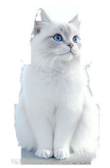

En una ciudad fluvial como Iquitos, el transporte y la preparación de cada alimento tiene un alto valor ambiental y comunitario. Conectamos los excedentes del día con familias que los aprovechan.
Panaderías, restaurantes, huariques y puestos del Mercado Central registran los alimentos frescos preparados hoy (juanes, pan de piso, verduras) que no llegaron a venderse.
Se publican automáticamente con temporizador regresivo a precios de rescate simbólicos (hasta -70%) o a S/ 0.00 solidario para comedores antes del cierre del local.
Familias y vecinos reservan con un tap y retiran en el local mostrando su QR digital. La comida no se tira, el bolsillo ahorra y protegemos el medio ambiente de Iquitos.
¡Miau! ¿Sabías que en Iquitos rescatar 1 kg de comida evita hasta 2.5 kg de CO₂ en nuestra Amazonía? 🌱

✨ Pasa el cursor o haz clic sobre Michi